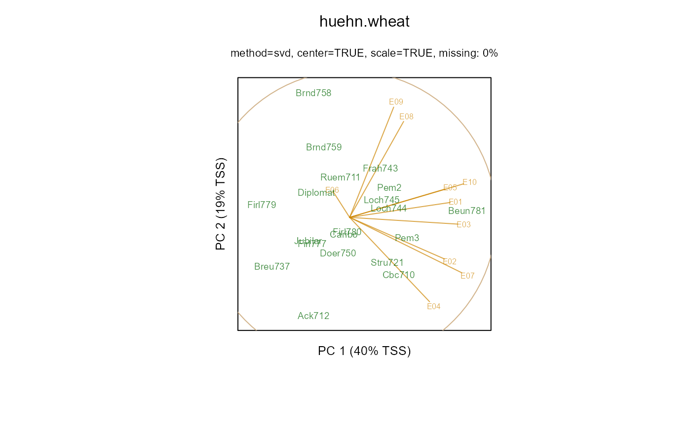

huehn.wheat.RdMulti-environment trial to illustrate stability statistics
data("huehn.wheat")
A data frame with 200 observations on the following 3 variables.
gengenotype
envenvironment
yieldyield dt/ha
Yields for a winter-wheat trial of 20 genotypes at 10 environments.
Note: Huehn 1979 does not use genotype-centered data when calculating stability statistics.
Manfred Huehn (1979). Beitrage zur Erfassung der phanotypischen Stabilitat I. Vorschlag einiger auf Ranginformationen beruhenden Stabilitatsparameter. EDV in Medizin und Biologie, 10 (4), 112-117. Table 1. http://nbn-resolving.de/urn:nbn:de:bsz:15-qucosa-145979
Nassar, R and Huehn, M. (1987). Studies on estimation of phenotypic stability: Tests of significance for nonparametric measures of phenotypic stability. Biometrics, 43, 45-53.
library(agridat) data(huehn.wheat) dat <- huehn.wheat # Nassar & Huehn, p. 51 "there is no evidence for differences in stability # among the 20 varieties". libs(gge) m1 <- gge(yield ~ gen*env, dat) biplot(m1, main="huehn.wheat")libs(reshape2) datm <- acast(dat, gen~env, value.var='yield') apply(datm,1,mean) # Gen means match Huehn 1979 table 1#> Ack712 Beun781 Breu737 Brnd758 Brnd759 Caribo Cbc710 Diplomat #> 65.11 74.87 63.29 67.29 67.55 69.04 71.03 67.10 #> Doer750 Firl777 Firl779 Firl780 Frah743 Jubilar Loch744 Loch745 #> 68.60 66.60 64.31 69.63 70.89 66.45 70.46 70.72 #> Pem2 Pem3 Ruem711 Stru721 #> 71.72 72.15 69.06 71.13#> E01 E02 E03 E04 E05 E06 E07 E08 E09 E10 #> 81.770 80.845 66.745 67.540 70.915 51.450 61.095 80.660 52.835 74.645#> E01 E02 E03 E04 E05 E06 E07 E08 E09 E10 #> Ack712 6.5 7.0 9.0 8.0 11.0 4.0 12 1.0 1.0 5 #> Beun781 19.0 20.0 17.0 11.5 20.0 7.0 20 18.0 12.5 20 #> Breu737 1.0 2.0 1.0 7.0 9.0 2.0 7 4.0 2.0 2 #> Brnd758 3.0 9.0 8.0 1.0 17.0 12.0 1 20.0 19.0 6 #> Brnd759 17.0 1.0 3.0 3.0 12.0 5.0 4 8.0 17.0 13 #> Caribo 6.5 16.0 11.0 18.0 2.0 13.5 11 17.0 10.0 7 #> Cbc710 9.5 18.0 15.0 16.0 19.0 15.0 19 3.0 4.0 18 #> Diplomat 8.0 14.0 4.5 2.0 4.0 16.0 5 12.0 7.0 11 #> Doer750 20.0 10.5 2.0 13.0 6.5 9.0 16 6.0 6.0 3 #> Firl777 5.0 10.5 10.0 10.0 1.0 11.0 3 7.0 3.0 12 #> Firl779 2.0 5.0 4.5 4.0 3.0 18.0 2 13.0 5.0 1 #> Firl780 9.5 13.0 14.0 17.0 8.0 20.0 9 9.5 12.5 9 #> Frah743 18.0 6.0 6.0 11.5 18.0 3.0 14 16.0 20.0 16 #> Jubilar 4.0 8.0 7.0 6.0 5.0 10.0 10 2.0 11.0 4 #> Loch744 13.0 4.0 19.0 15.0 15.5 1.0 17 15.0 16.0 10 #> Loch745 12.0 12.0 16.0 9.0 6.5 8.0 18 14.0 18.0 15 #> Pem2 14.0 15.0 18.0 14.0 10.0 17.0 8 19.0 8.0 19 #> Pem3 15.0 17.0 20.0 19.0 15.5 13.5 13 11.0 9.0 17 #> Ruem711 11.0 3.0 12.0 5.0 14.0 19.0 6 5.0 15.0 14 #> Stru721 16.0 19.0 13.0 20.0 13.0 6.0 15 9.5 14.0 8# Huehn 1979 did not use genotype-centered data, and his definition # of S2 is different from later papers. libs(stable)#>#> #> #>#> #>#> #> #>#> #> #>#> #> #>#> Error in huehn(datm, corrected = FALSE): could not find function "huehn"## MeanRank S1 ## Jubilar 6.70 3.62 ## Diplomat 8.35 5.61 ## Caribo 11.20 6.07 ## Cbc710 13.65 6.70 # Very close match to Nassar & Huehn 1987 table 4. apply(huehn(datm, corrected=TRUE), 2, round,2)#> Error in huehn(datm, corrected = TRUE): could not find function "huehn"## MeanRank S1 Z1 S2 Z2 ## Jubilar 10.2 4.00 5.51 11.29 4.29 ## Diplomat 11.0 6.31 0.09 27.78 0.27 ## Caribo 10.6 6.98 0.08 34.49 0.01 ## Cbc710 10.9 8.16 1.78 47.21 1.73